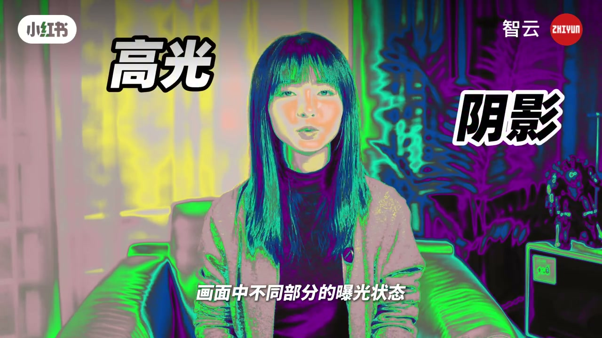
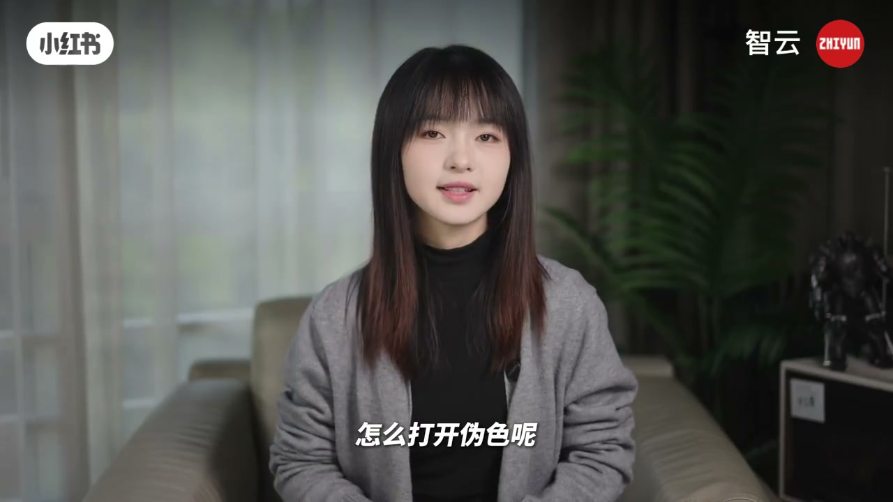
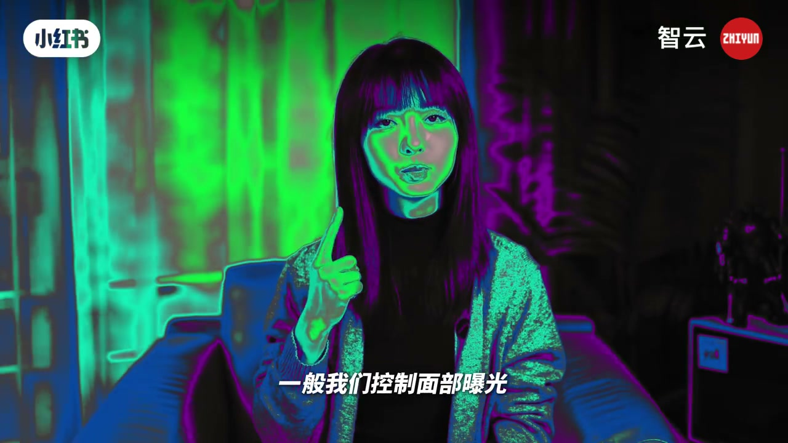

内容要点
「智云」把伪色（口播 ASR 常写成「尾色」）讲成比直方图、斑马线更直观的分区曝光工具：亮度映射成紫蓝/绿粉/黄红，监视器或伪色 LUT 都能开。实操上让面部落在粉色为安全曝光；侧光可一半粉一半绿；黄红预警过曝，黑紫示欠曝。
知识结构
亮度转颜色，看清分区曝光；阴影紫蓝、中间调绿粉、高光黄红。
监视器伪色；无监视器用伪色监看 LUT。
面部粉色=安全；侧光粉+绿；黄红过曝警告，黑紫欠曝。
肤色约 50–70 IRE；光比过大用影视灯平衡，小机器也能拍出质感。
伪色把「亮不亮」变成「什么颜色」——先把脸调进粉色区，再谈风格光比。
00:00-00:39伪色色带与开启方式
对比直方图和斑马线（ASR「白马线」），伪色更能一眼看到画面各区域曝光状态，被称为分区曝光神器。原理：不同亮度映射成不同颜色——阴影偏紫蓝，中间调绿/粉，高光黄/红。
开启：常见监视器自带伪色；没有监视器可加载伪色监看 LUT，很多相机支持导入 LUT，效果相近。


00:39-01:29面部粉色安全区与光比平衡
实操：控制面部曝光到粉色，是比较安全的基准；侧光时可一边粉一边绿。黄色=高光警告，红色=即将过曝，黑色/紫色=欠曝。更精细的伪色中间还有三档中灰。
参考图建议肤色约 50–70 IRE（面部高光带灰与粉）。出现明显欠/过曝先改相机参数；光比太大再用影视灯补，这也是「机器一般也能拍出质感」的原因——布光比机身更决定分区。

完整转录（43段）
以下文本由 Whisper medium 模型自动转录，可能存在少量识别误差，已尽可能修正。
尾色是一个很好用的曝光辅助工具
相比直方图和白马线
尾色能够帮我们更好的看到
画面中不同部分的曝光状态
是分区曝光的神器
其实也很容易掌握
首先尾色是什么呢
尾色会把不同的亮度转换成颜色
可以更直观的看到不同区域的曝光差异
阴影的部分会显示紫色 蓝色
中间调会显示绿色 粉色
高光的部分会显示黄色 红色
怎么打开尾色呢
现在常见的监视器都有尾色的功能
如果没有监视器的话
可以用尾色监看LUT
很多相机型号都有导入LUT的功能
也能够达到相似的使用效果
怎么使用尾色呢
一般我们控制面部曝光
让面部呈现粉色
就是一个比较安全的曝光
如果使用侧光
可以让脸部一边显示粉色
一边显示绿色
需要注意的是黄色代表高光警告
红色代表即将要过曝了
黑色和紫色则代表欠曝
有一些尾色做得更加精细
中间还有三档中灰
大家可以参考这张图
肤色控制在50-70 I2E
也就是面部高光部分有灰色和粉色
需要注意如果画面中出现了
明显欠曝或过曝的情况
可以调整相机的参数
来平衡整体的曝光
当光比太大的时候
可以用影视灯辅助进行平衡
这是为什么很多优秀的摄影师 灯光师
能够用巴比特的机器
也能够拍得很有质感
你学会了吗